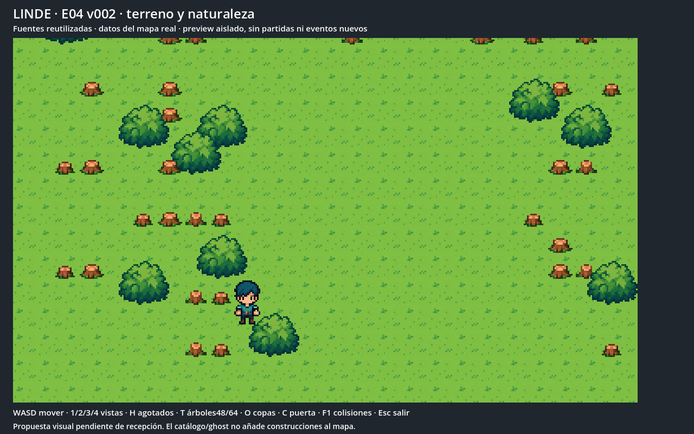
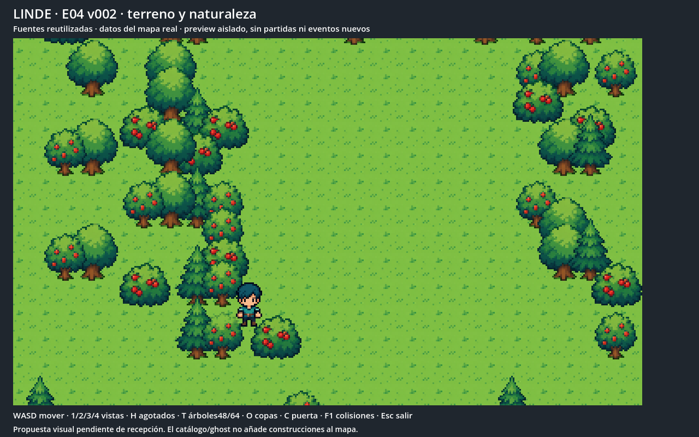
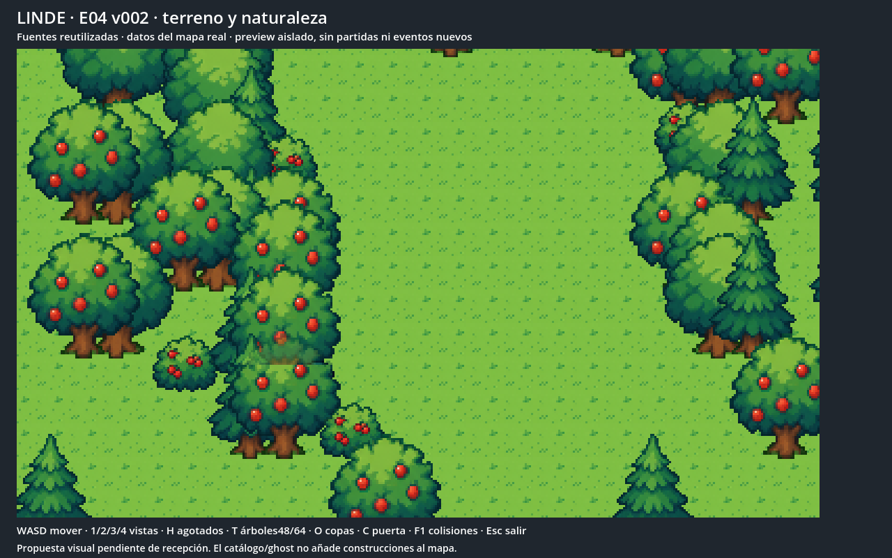
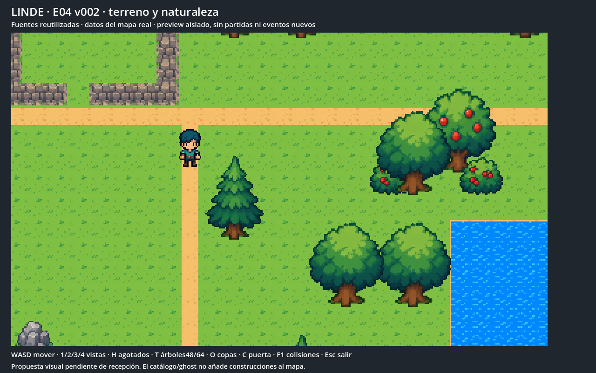
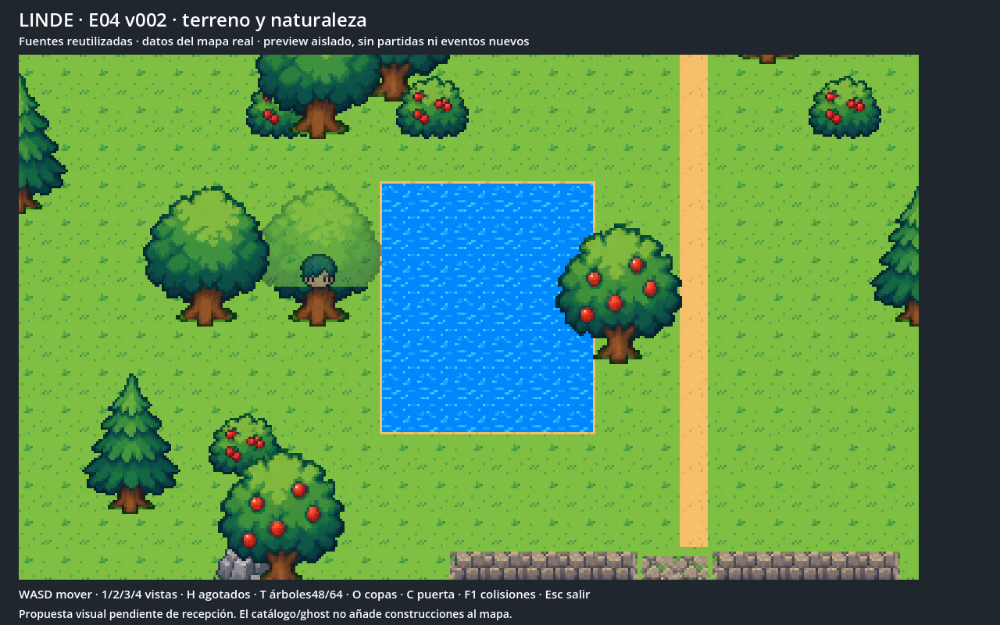
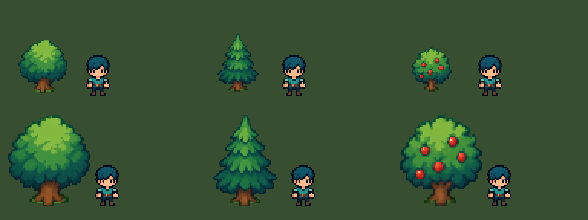
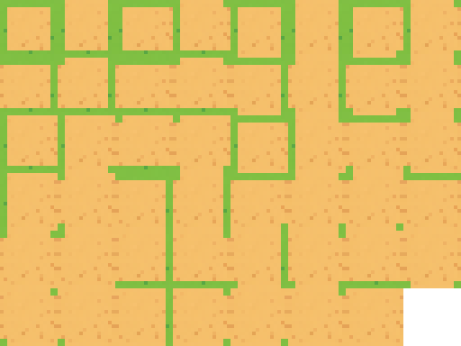
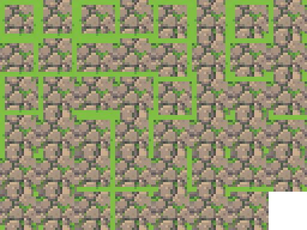
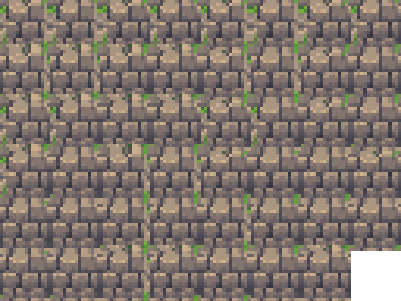
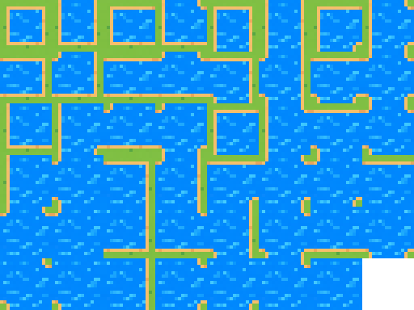

Terreno con 47 conexiones por material; agua con cuatro cuadros; árboles de 48 y 64 píxeles, copas separadas y estados agotados reutilizados.
Candidato validado técnicamente. Pendiente de aprobación visual e integración.
Informe y límites








